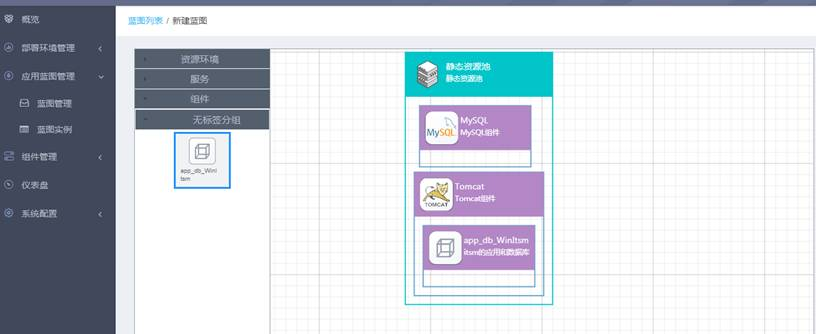
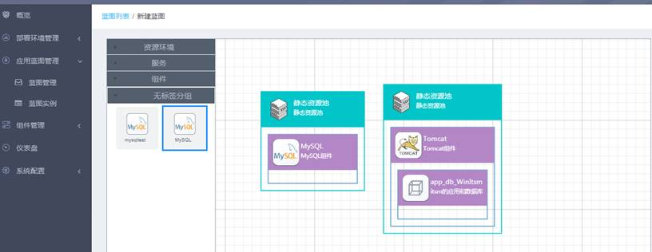
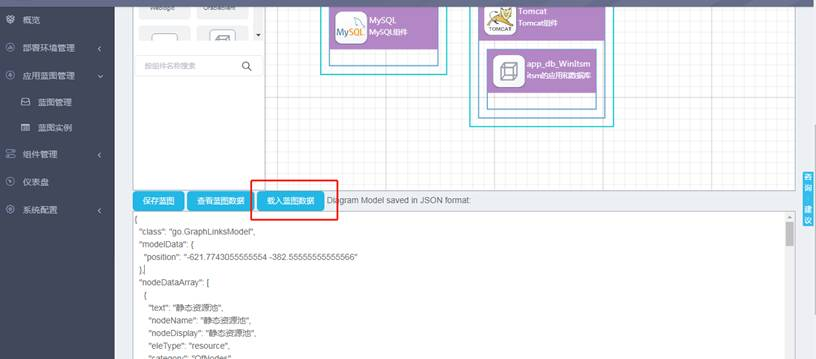
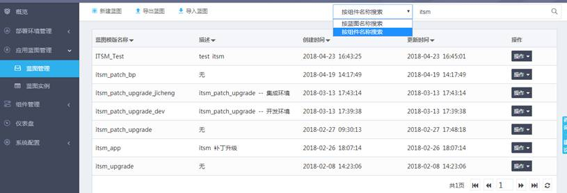

“应用蓝图管理”-->“蓝图管理”-->“新建蓝图”，可以打开蓝图设计器的编辑界面，从页面左侧拖拽出需要的资源池和组件。下面以部署一个web应用为例。有如下几种画法可供参考
1）所有组件都在同一个静态资源池

2）不同的组件放在不同资源池

3）载入蓝图数据
“应用蓝图管理”-->“蓝图管理”-->“新建蓝图”，将存在的json文件载入到蓝图中

蓝图设计器的使用方法请参见附录二（蓝图设计器操作指南）。以上三种方法创建完蓝图模板后，点击“保存蓝图”按钮输入蓝图名称和蓝图描述信息后，占击“保存”按钮，蓝图模板创建成功并在蓝图模板列表中显示出来，如下图所示：
在图中搜索框中输入查询条件，系统进行模糊查询，并将查询结果显示出来，如果条件不满足系统给出提示信息。系统支持按蓝图名称或组件名称来查询指定的蓝图模板。
